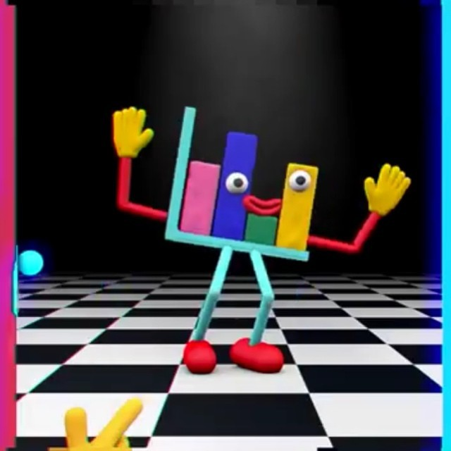
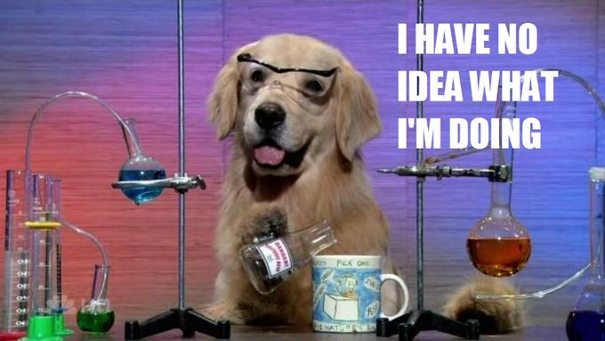
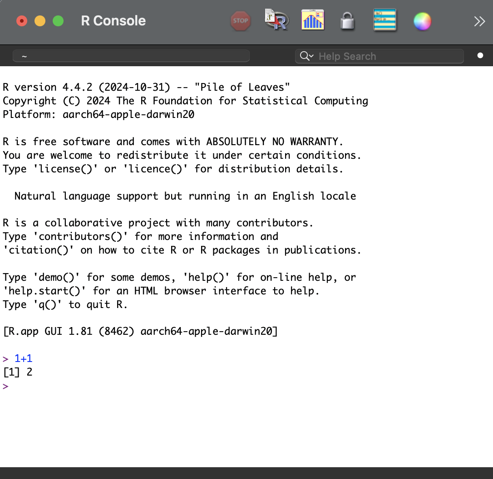
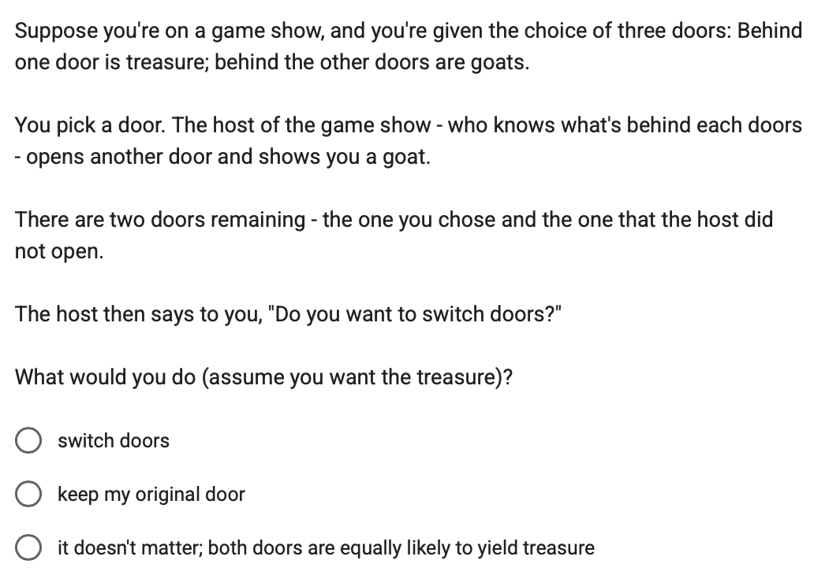
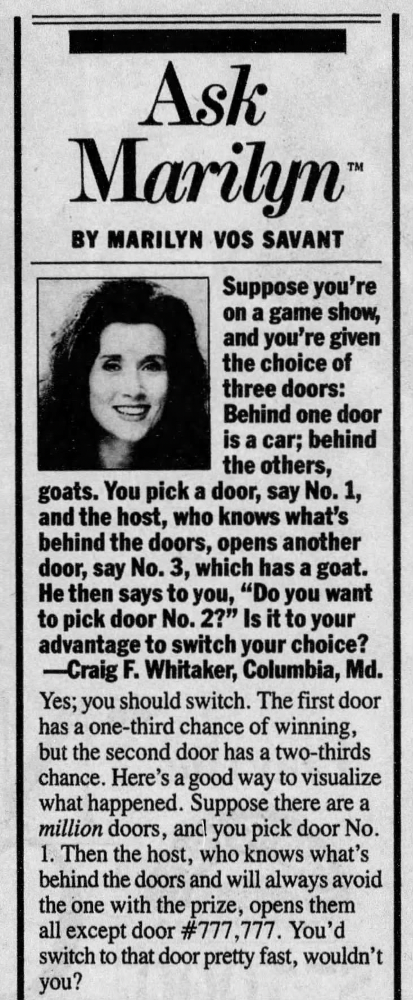
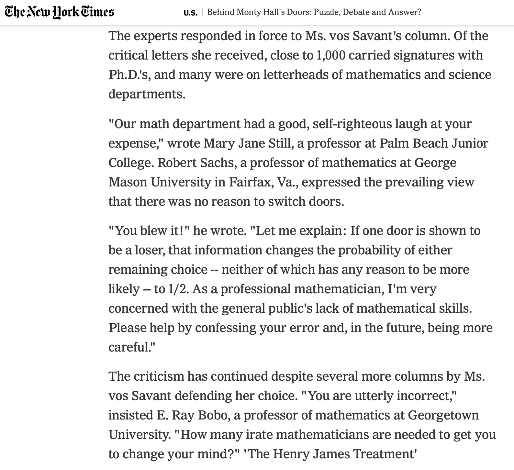

Welcome to Psych 102
Access this document here : tinyurl.com/hello102itisfall2025
Please take this short survey (which will serve as your attendance for today.)
Help yourself to coffee & donuts if you’d like. We will get started soon!

Goals of this Lecture
- Introductions to the class.
- Introductions to statistics.
- Introductions to the program R.
Introductions to the Class
The Professor and TA
- We learn from each other!1
1 Thanks to Frederic Theunnisen, Steve Pantiadosi, and hundreds of random people on the internet for sharing their knowledge and materials with me.

The Students : Who are y’all?
- Click the link above (log in with your @berkeley.edu gmail account to access)
- Interview the person next to you and take notes.
The Course
is Online
class webpage : syllabus and class notes + homework assignments
bCourses: datasets; submitting assignments (labs and discussions); grades.
discord [see bCourses for link] : help w/ homework and building community at cal (go bears…)
is IRL :
Mondays Class 11:00 AM - 1:00 PM
professor lecture
student work time
article discussions & presentations
read an article each week
post a reading discussions by Thursday at 11:59 PM
sign up for presentations; professor will do the first one B^)
Discussion Sections Wednesdays
- review lecture & lab assignments
- work on lab assignment
- Lab Assignment Due Monday at 8:59 AM.
Syllabus overview / questions / concerns?
Introductions to Statistics
Why Statistics? Why is this Class Required for HONORS students?
- student ideas go here
- student ideas go here
Psychology as a Science
Science is….
Description : The topics of your research interests!
Prediction : An educated guess you have about the future.
Power : How you use this knowledge (and predictions) to exert influence over the world / your future.
student example goes here!
student example goes here!
Is Psychology a Science?
Should Psychology be a Science?
Statistics as a Language
What happens in a good language class?
| Human Language | Statistics / Computer Language |
|---|---|
Introductions to R (a Programming Language)
The Console
The console is where R does its work.
- ACTIVITY : Look at the image below. What do you see? What makes sense / what seems confusing?

- ACTIVTY : open up R and type some MATH into the console. Yeah! You are programming!!!
R Studio and the Source File (.R)
In this class, we’ll be using RStudio. RStudio is an IDE (Integrated Development Environment) that includes the console along with other useful windows and tools.
- The Console is at the bottom left of the IDE. Hi console!
- The R script is at the top left of the IDE, and is a document that you use to write (and organize) code. You will want to do most of your work in the R script, and feel an appropriate level of anxiety when you notice that your Rscript is unsaved (as indicated by the red text and *).
- The Environment is at the top right of the IDE, and shows you all of the “objects” that you have defined in R.
- The File Window is at the bottom right of the IDE, and shows you the files. Note that there are tabs here for Plots (where graphs will pop up), Packages (things you can download to give R extra features), a Help viewer (sometimes very useful!).

Working in an R Script
Here’s a link to an RScript! You can download this to your computer, and open it in RStudio.
Topics We Will Review
math : common operators and functions
variables : string and numeric vectors
datasets : data.frame(); datasets::
functions : descriptive statistics, base graphics, generating random numbers
good code : troubleshooting errors; naming datasets; white space; keeping code and files organized
Is there time left? A fun R demonstration :)
The Monty Hall Problem.

|  |  |
Use R to simulate the Monty Hall Problem.
You’ll need to use the following bits of code :
variable <- c("") # create a string variable (for the options and to save outcomes)
sample() # to "randomly" sample from this variable
setdiff() # to differentiate between one option and others
for(){} # to simulate the decision and outcome 1000 timesYou’re welcome to try this on your own, but below are steps to help guide your work if you’d like (and some extra hints if you’d like more specific instructions.)
Totally okay if you struggle with this! The point is to try and do something fun (and potentially challenging) in R, and see how computers can be used to address research questions.
- Define the options to choose from (three doors)
Create a string variable with three options : door1, door2, and door3
- Define player choice and treasure location.
use the sample() function to define two variables named choice and treasure; each a random door.
- Define what doors Monty can open.
Use the setdiff() function to identify all the doors that are not what the player chose or where the treasure is.
- Define what Monty does open.
Use the sample function to select one random door from the variable that defines what doors Monty can open.
- What happens if we switch?
Define a new variable that identifies the choice if we switch; this should selects one random option from the list of doors that are NOT what Monty opened or what the player initially chose. NOTE : You will need to use the sample and setdiff functions together.
- Test whether the player won or not.
Use the if-else function to define a “WIN” as whether the choice variable matches the treasure variable. Then repeat this step for whether the switch choice variable matches the treasure variable.
- Repeat these steps 1000 times.
Define an empty array to save the result of each test. Then define a for-loop to simulate the Monty Hall 1000 times.
Conclusion and Next Time
I’ll send an announcement about all of this!
- NOW : Week 1 Class Exit Survey
- ASAP : Take the on-boarding survey (see bCourses)
- BY THURSDAY AT MIDNIGHT : Read (& Discussion Post) Article 1 (on bCourses)
- BY NEXT CLASS : Sign up for an Article Presentation (see class webpage / syllabus)
- BY NEXT CLASS : Complete Lab 1 (see class webpage)